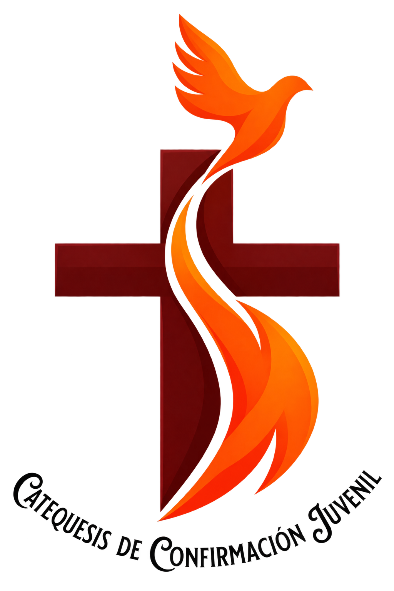

Formación bíblica
Encuentros centrados en la Palabra de Dios, la vida de Jesús y el sentido del Sacramento de la Confirmación.

Te esperamos en la Catequesis de Confirmación Juvenil de la Parroquia Santuario San Martín de Porres. Todos los domingos, en un ambiente juvenil, dinámico y lleno de esperanza.

La cuenta se actualiza automáticamente para el siguiente domingo a las 9:25 a. m. y muestra cuánto falta para el encuentro.
La catequesis combina fe, formación y amistad en un entorno juvenil preparado para recibir nuevos integrantes.
Acompañamos a los jóvenes en un proceso de formación cristiana que une oración, amistad, aprendizaje y participación activa en la parroquia.
Encuentros centrados en la Palabra de Dios, la vida de Jesús y el sentido del Sacramento de la Confirmación.
Dinámicas, convivencias y actividades que hacen de la catequesis un espacio cercano, alegre y participativo.
Buscamos formar jóvenes comprometidos con la Iglesia, el servicio y la comunidad.
Una ruta de crecimiento integral para que cada joven viva su fe con mayor profundidad y compromiso.
Porque aquí encontrarás amigos, formación, acompañamiento espiritual y un espacio donde crecer con alegría en la fe.
Además de la formación dominical, compartimos actividades que fortalecen la amistad, el servicio y la vida cristiana dentro de la parroquia.
Momentos de oración comunitaria para iniciar cada encuentro poniendo todo en manos de Dios.
EspiritualidadFormación en la fe, reflexión del Evangelio y preparación para recibir con alegría la Confirmación.
FormaciónEspacios de integración, dinámicas y amistad para que cada joven se sienta parte de la comunidad.
IntegraciónJuegos, competencias y trabajo en equipo con espíritu juvenil, alegría y sana convivencia.
DeporteJornadas especiales de encuentro con Cristo para renovar la fe y fortalecer el corazón.
RetiroParticipamos en celebraciones, campañas solidarias y actividades parroquiales que unen a todos.
ComunidadEllos acompañan cada domingo con cercanía, alegría y compromiso para ayudar a los jóvenes en su camino hacia la Confirmación.
Nuestro equipo de catequistas acompaña la formación, la oración y la vida comunitaria de los jóvenes de la parroquia. Con mucha paciencia y dedicación, buscamos que cada encuentro sea un espacio para aprender, compartir y crecer en la fe.
Haz clic en cualquier foto para verla en grande.


.
Acompañamos tu visita con una playlist instrumental católica, suave y elegante.
Música suave para oración y recogimiento. La lista avanza sola y puedes controlarla con el botón o el icono flotante.
Información clara para jóvenes y padres de familia interesados en unirse a la catequesis.
Encuéntranos en la parroquia, revisa nuestras redes y ubícate fácilmente en el mapa.